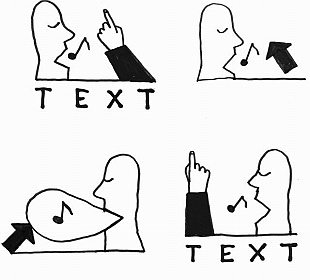

2 October 2026 · Městský soud v Praze
MS Praha zachoval desetidenní lhůtu k vyjádření k vyjádření NCOZ a po jejím uplynutí je připraven rozhodnout
18 A 17/2026-191
PDF documentWill there be a cannabis amnesty?
138 filings · 202 numbered addressee entries · since 1 July 2026. Each row has one PDF link; public copies are labeled.
| No. | Date | Addressee | Ref./case no. | Subject of filing |
|---|---|---|---|---|
| 1 | Policie České republiky – Národní centrála proti organizovanému zločinu SKPV | 18 A 17/2026 | Claimant’s response to court letter 18 A 17/2026-191; preserving equality of arms and adversarial proceedings Public PDF copy | |
| 2 | Prague Municipal CourtCopy | 18 A 17/2026 | For the court file: claimant’s response to letter 18 A 17/2026-191 Public PDF copy | |
| 3 | Obvodní soud pro Prahu 10 | 3 Cm 2/2026; 3 Cmo 24/2026-26; nová sp. zn. dosud nesdělena | Supplement and clarification of the action following the Prague High Court order; request for the new case number Public PDF copy | |
| 4 | Prostějov District Court | 15 Nt 3104/2026; 15 Nt 3106/2026 | Procedural and evidentiary filing by the Educational Cannabis Clinic in both reopening proceedings and for the public hearings of 12 and 13 October 2026 Public PDF copy | |
| 5 | Office for Personal Data Protection | SIN 55/2026-19; KPR 5772/2026-2; podnět z 14. 7. 2026 | Complaint about inaction by the Czech Data Protection Authority and request for immediate procedural action in three separate matters Public PDF copy | |
| 6 | Prague Municipal Court | 18 A 23/2026 | Urgent supplement to the action – new evidence: Czech Defence Lawyers’ Union Statement No. 3/2026 Original PDF | |
| 7 | Ministry of JusticeAlso addressed | MSP-162/2026-ODKA-SPZ; MSP-19/2026-ODKA-ROZ | Urgent supplement to the supervisory request – new evidence: Czech Defence Lawyers’ Union Statement No. 3/2026 Original PDF | |
| 8 | Prague Municipal Court | 18 A 17/2026 | Procedural statement on the court letter of 30 September 2026 and preliminary reply to the NCOZ statement of 20 May 2026 Original PDF | |
| 9 | Czech Defence Lawyers’ Union | 15 Nt 3104/2026; 15 Nt 3106/2026 | Urgent request to arrange pro bono defence counsel Original PDF | |
| 10 | Prostějov District Court | 15 Nt 3104/2026; 15 Nt 3106/2026 | Joint application for free defence and appointment of defence counsel Original PDF | |
| 11 | Supreme Public Prosecutor’s Office | 6 NZN 1737/2026 | Urgent joint evidentiary supplement – closed chain of responsibility Original PDF | |
| 12 | Prague High Public Prosecutor’s OfficeAlso addressed | 1 VZN 1678/2026 | Urgent joint evidentiary supplement – closed chain of responsibility Original PDF | |
| 13 | Olomouc High Public Prosecutor’s OfficeAlso addressed | 3 VZN 239/2026 | Urgent joint evidentiary supplement – closed chain of responsibility Original PDF | |
| 14 | Brno Regional Public Prosecutor’s Office | 1 KZT 475/2026; 1 KZN 1079/2026 | Complaint about inaction in two review proceedings in Brno Original PDF | |
| 15 | Evropská veřejná ochránkyně práv | stížnost na EUDA | Complaint to the European Ombudsman concerning EUDA’s oversight of THC data (Czech version) Original PDF | |
| 16 | Evropská veřejná ochránkyně práv | stížnost na EUDA | Complaint to the European Ombudsman concerning EUDA’s oversight of THC data (English version) Original PDF | |
| 17 | European Union Drugs Agency | EXO/FHP/pd (26) D 106 | Fundamental objection to EUDA response of 25 September concerning comparability of THC data Original PDF | |
| 18 | Prague Municipal Court | 18 A 23/2026; 18 A 23/2026-182 | Reply to the Justice Ministry’s statement and request to consider subsequent records Original PDF | |
| 19 | Czech Television | CT 338889/2025 | Invitation to Czech Television and its Council to public reopening hearings Original PDF | |
| 20 | Czech Television CouncilAlso addressed | CT 338889/2025 | Invitation to Czech Television and its Council to public reopening hearings Original PDF | |
| 21 | Council for Radio and Television BroadcastingCopy | RRTV/2026/20/fej | Invitation to Czech Television and its Council to public reopening hearings Original PDF | |
| 22 | Office for Personal Data ProtectionCopy | podnět z 14. 7. 2026 | Invitation to Czech Television and its Council to public reopening hearings Original PDF | |
| 23 | Prague Municipal Court | 18 A 17/2026; 18 A 17/2026-182 | Request to clarify procedural status after the court’s letter of 23 September Original PDF | |
| 24 | Nejvyšší správní soud | 18 A 17/2026; § 174a | Motion to set a deadline for the Prague Municipal Court to decide Original PDF | |
| 25 | Prague Municipal CourtVia | 18 A 17/2026 | Motion to set a deadline for the Prague Municipal Court to decide Original PDF | |
| 26 | Office of the President of the Czech Republic | KPR 5080/2026; KPR 4093/2026 | Third urgent pardon supplement, invitation to public hearings and evidentiary motions Original PDF | |
| 27 | Supreme Public Prosecutor’s OfficeCopy | 6 NZN 1737/2026 | Third urgent pardon supplement, invitation to public hearings and evidentiary motions Original PDF | |
| 28 | Ministry of JusticeCopy | MSP-162/2026-ODKA-SPZ; 18 A 23/2026 | Third urgent pardon supplement, invitation to public hearings and evidentiary motions Original PDF | |
| 29 | Policejní prezidium České republikyCopy | PPR-44020/ČJ-2026-990210-PD | Third urgent pardon supplement, invitation to public hearings and evidentiary motions Original PDF | |
| 30 | Prostějov District CourtAlso addressed | 15 Nt 3104/2026; 15 Nt 3106/2026 | Third urgent pardon supplement, invitation to public hearings and evidentiary motions Original PDF | |
| 31 | Prague 4 District Court | 10 C 69/2026 | Supplement to factual allegations and reply to Czech Television in the civil action Original PDF | |
| 32 | Prague Municipal Court | 18 A 23/2026 | Supplement to the action with accreditation request and legislative developments Original PDF | |
| 33 | Prostějov District Court | 15 Nt 3104/2026; 15 Nt 3106/2026 | Corrected procedural and evidentiary supplement before public hearings Public PDF copy | |
| 34 | Krajský soud v BrněAlso addressed | 9 To 315/2026; 9 To 316/2026 | Corrected procedural and evidentiary supplement before public hearings Public PDF copy | |
| 35 | Prague Municipal Court | 15 Ad 14/2026; 8 Ad 9/2026 | Question about transfer and refund of court fees in two cases Original PDF | |
| 36 | Prostějov District Court | 15 Nt 3104/2026; 15 Nt 3106/2026 | Consolidated procedural and evidentiary supplement for reopening two criminal cases Public PDF copy | |
| 37 | Krajský soud v BrněAlso addressed | 9 To 315/2026; 9 To 316/2026 | Consolidated procedural and evidentiary supplement for reopening two criminal cases Public PDF copy | |
| 38 | Prostějov District Court | 15 Nt 3104/2026; 15 Nt 3106/2026 | Evidence supplement on reopening and a related prosecution request Original PDF | |
| 39 | Prostějov District Public Prosecutor’s OfficeAlso addressed | 1 ZT 11/2010; ZN 4/2026 | Evidence supplement on reopening and a related prosecution request Original PDF | |
| 40 | Supreme Public Prosecutor’s Office | 6 NZN 1737/2026 | Final statement on the pre-action demand to NSZ and the Czech Television complaint Original PDF | |
| 41 | Czech TelevisionAlso addressed | CT 338889/2025 | Final statement on the pre-action demand to NSZ and the Czech Television complaint Original PDF | |
| 42 | Czech Television CouncilAlso addressed | CT 338889/2025 | Final statement on the pre-action demand to NSZ and the Czech Television complaint Original PDF | |
| 43 | Krajský soud v Brně | 9 To 315/2026; 9 To 316/2026 | Joint evidence supplement to complaints and supervisory proceedings Original PDF | |
| 44 | Olomouc High Public Prosecutor’s OfficeAlso addressed | 3 VZN 239/2026 | Joint evidence supplement to complaints and supervisory proceedings Original PDF | |
| 45 | Brno Regional Public Prosecutor’s OfficeAlso addressed | 1 KZT 475/2026; 1 KZN 1079/2026 | Joint evidence supplement to complaints and supervisory proceedings Original PDF | |
| 46 | Ministry of Justice | MSP-162/2026-ODKA-SPZ | Request to supervise police expert work and review laboratory accreditation Public PDF copy | |
| 47 | Český institut pro akreditaci, o. p. s.Also addressed | přezkum akreditace policejních laboratoří | Request to supervise police expert work and review laboratory accreditation Public PDF copy | |
| 48 | Policejní prezidium České republiky | PPR-24960/ČJ-2026-990810; KU-4139/ČJ-2026-2305KM | Second urgent supplement to Police President review request on THC testing Original PDF | |
| 49 | Supreme Public Prosecutor’s Office | 6 NZN 1737/2026 | Tenth supplement to the pre-action demand with GIBS and Justice Minister records Original PDF | |
| 50 | Prague Municipal Court | 18 A 17/2026 | Supplement to the action with a new GIBS notice Original PDF | |
| 51 | Prague Municipal Court | 18 A 23/2026 | Supplement to the action with a new Justice Minister response Original PDF | |
| 52 | Ministry of the Interior | MV-108890-3/TP-2026; MV-97289-3/TP-2026; MV-114818-2/TP-2026 | Third urgent supplement to complaints addressed to the Interior Minister Original PDF | |
| 53 | Office of the President of the Czech Republic | KPR 5080/2026 | Second urgent supplement to pardon request with two official records from 8 September Original PDF | |
| 54 | Prostějov District Court | 2 T 104/2010; 15 Nt 3104/2026; 15 Nt 3106/2026 | Request to clarify public hearings and supplement evidence for reopening Original PDF | |
| 55 | Prostějov District Public Prosecutor’s OfficeAlso addressed | 1 ZT 11/2010 | Request to clarify public hearings and supplement evidence for reopening Original PDF | |
| 56 | Office of the President of the Czech Republic | KPR 5080/2026 | Supplement to pardon and rehabilitation request: 2010–2026 history and new official evidence Original PDF | |
| 57 | Krajské státní zastupitelství v Ostravě | 4 KZN 7116/2026; 1 ZN 7061/2026-79 | Request for review of the Frýdek-Místek prosecutor’s response with supervisory copy Original PDF | |
| 58 | Olomouc High Public Prosecutor’s OfficeCopy | 3 VZN 239/2026 | Request for review of the Frýdek-Místek prosecutor’s response with supervisory copy Original PDF | |
| 59 | Krajský soud v Brně | 9 To 315/2026; 9 To 316/2026 | Joint evidentiary supplement to complaints concerning reopening of proceedings Original PDF | |
| 60 | Brno Regional Public Prosecutor’s OfficeCopy | 1 KZT 475/2026; 1 KZN 1079/2026 | Joint evidentiary supplement to complaints concerning reopening of proceedings Original PDF | |
| 61 | Prague High Public Prosecutor’s Office | 1 VZN 1678/2026; 3 KZN 974/2026-108 | Review request concerning municipal prosecution response 3 KZN 974/2026-108 Public PDF copy | |
| 62 | Frýdek-Místek District Public Prosecutor’s Office | 1 ZN 7061/2026 | Urgent supplement to request for review of Frýdek-Místek forensic methods Original PDF | |
| 63 | Krajské státní zastupitelství v OstravěCopy | 4 KZN 7116/2026 | Urgent supplement to request for review of Frýdek-Místek forensic methods Original PDF | |
| 64 | Olomouc High Public Prosecutor’s OfficeCopy | 3 VZN 239/2026 | Urgent supplement to request for review of Frýdek-Místek forensic methods Original PDF | |
| 65 | Supreme Public Prosecutor’s Office | 6 NZN 1737/2026 | Ninth supplement to the pre-action demand with new evidence Public PDF copy | |
| 66 | Prague Municipal Court | 18 A 17/2026 | Urgent supplement to the action concerning Section 97 of the Police Act Original PDF | |
| 67 | Prague High Public Prosecutor’s Office | 1 VZN 1678/2026; 3 KZN 974/2026 | Urgent supplement to oversight of incomplete review files Original PDF | |
| 68 | Nejvyšší správní soud | 15 A 44/2026-43 | Cassation complaint against rejection of the action concerning the Interior Ministry Original PDF | |
| 69 | Ministry of Culture | MK-S 6893/2026 SOCNS; MK 53547/2026 SOCNS | Administrative appeal against termination of the Church of Cannabis registration proceedings Original PDF | |
| 70 | Prague Municipal Court | 15 Ad 14/2026; 8 Ad 9/2026 | Intervention action concerning the State Institute for Drug Control Original PDF | |
| 71 | Office of the President of the Czech Republic | KPR 5080/2026 | Invitation to the President to visit the Ospělov research farm and review THC testing Original PDF | |
| 72 | Czech Television | CT 338889/2025 | Supplement to complaint about Czech Television and Council inaction with new evidence Original PDF | |
| 73 | Czech Television CouncilAlso addressed | CT 338889/2025 | Supplement to complaint about Czech Television and Council inaction with new evidence Original PDF | |
| 74 | Council for Radio and Television BroadcastingCopy | RRTV/2026/20/fej | Supplement to complaint about Czech Television and Council inaction with new evidence Original PDF | |
| 75 | Prague High Public Prosecutor’s Office | 1 VZN 1678/2026 | Urgent supplement to oversight and request for joint review of municipal prosecution responses Original PDF | |
| 76 | Supreme Public Prosecutor’s Office | 6 NZN 1737/2026 | Eighth supplement to the pre-action demand with new prosecution records Original PDF | |
| 77 | Prague High Public Prosecutor’s Office | 1 VZN 1678/2026; 2 KZN 683/2026-31 | Request to review municipal prosecution response and supplement oversight Original PDF | |
| 78 | Prague Municipal Court | 18 A 17/2026 | Urgent evidentiary supplement to the action against the police Original PDF | |
| 79 | Ministry of Justice | MSP-162/2026-ODKA-SPZ; MSP-19/2026-ODKA-ROZ | Renewed complaint to the Justice Minister and evidence supplement to the court action Original PDF | |
| 80 | Prague Municipal CourtAlso addressed | 18 A 23/2026 | Renewed complaint to the Justice Minister and evidence supplement to the court action Original PDF | |
| 81 | Olomouc High Public Prosecutor’s Office | 3 VZN 239/2026 | Request to supervise Ostrava and Brno prosecutors and forensic methods Public PDF copy | |
| 82 | Prague Municipal Court | 15 A 44/2026 | Urgent evidence supplement to the action against the Interior Ministry Original PDF | |
| 83 | Ministry of the Interior | MV-108890-3/TP-2026; MV-97289-3/TP-2026; MV-114818-2/TP-2026 | Second urgent supplement to Interior Minister complaints with new evidence Original PDF | |
| 84 | Ministry of the Interior | KRPT-203594-8/ČJ-2026-0700KR | Appeal against partial refusal of information on police forensic methods Original PDF | |
| 85 | Moravian-Silesian Regional Police DirectorateVia | KRPT-203594-8/ČJ-2026-0700KR | Appeal against partial refusal of information on police forensic methods Original PDF | |
| 86 | Okresní soud v Ostravě | 15 T 11/2025 | Joint complaint supplement and evidence on THC testing Public PDF copy | |
| 87 | Frýdek-Místek District Public Prosecutor’s OfficeAlso addressed | 1 ZN 7061/2026 | Joint complaint supplement and evidence on THC testing Public PDF copy | |
| 88 | Krajské státní zastupitelství v OstravěAlso addressed | 4 KZN 7116/2026; 2 KZZ 2/2026 | Joint complaint supplement and evidence on THC testing Public PDF copy | |
| 89 | Brno Regional Public Prosecutor’s OfficeAlso addressed | 1 KZT 475/2026; 1 KZN 1079/2026 | Joint complaint supplement and evidence on THC testing Public PDF copy | |
| 90 | Generální inspekce bezpečnostních sborů | podání z 15. 8. 2026 | Urgent supplement to criminal report with new official evidence and request to preserve laboratory records Original PDF | |
| 91 | Prostějov District Court | 2 T 104/2010 | Supplement to reopening motion with new evidence and cooperation requests Original PDF | |
| 92 | Prostějov District Public Prosecutor’s OfficeAlso addressed | ZN 4/2026 | Supplement to reopening motion with new evidence and cooperation requests Original PDF | |
| 93 | Olomouc Regional Police DirectorateAlso addressed | KRPM-100092/ČJ-2026-1412UO | Supplement to reopening motion with new evidence and cooperation requests Original PDF | |
| 94 | Supreme Public Prosecutor’s Office | 6 NZN 1737/2026 | Seventh supplement to the pre-action demand and disciplinary request Original PDF | |
| 95 | Krajský soud v Brně | 9 To 315/2026; 9 To 316/2026 | Urgent complaint supplement with police evidence and impartiality objection Original PDF | |
| 96 | Prague Municipal Court | 8 Ad 9/2026 | Reply to the Health Ministry’s statement in case 8 Ad 9/2026 Original PDF | |
| 97 | Prague Municipal Court | 18 A 23/2026 | Supplement to the action with documentary evidence of the alleged continuing interference Original PDF | |
| 98 | Czech Television | CT 338889/2025 | Complaint about inaction by Czech Television and its Council and call to discuss settlement Original PDF | |
| 99 | Czech Television CouncilAlso addressed | CT 338889/2025 | Complaint about inaction by Czech Television and its Council and call to discuss settlement Original PDF | |
| 100 | Prague High Public Prosecutor’s Office | 1 VZN 1678/2026 | Joint request for coordinated oversight of Prague and Moravian cases Original PDF | |
| 101 | Olomouc High Public Prosecutor’s OfficeAlso addressed | 3 VZN 239/2026 | Joint request for coordinated oversight of Prague and Moravian cases Original PDF | |
| 102 | Prostějov District Public Prosecutor’s Office | ZN 4/2026-6 | Supplement to request and application for guidance on next procedural steps Original PDF | |
| 103 | Supreme Public Prosecutor’s Office | 6 NZN 1737/2026 | Sixth supplement to the pre-action demand with new facts Original PDF | |
| 104 | Prague Municipal Public Prosecutor’s Office | 3 KZN 197/2026; 2 KZN 55/2026 | Supplement to request for review of the Prague 7 prosecutor’s response Original PDF | |
| 105 | Obvodní státní zastupitelství pro Prahu 7Copy | ZN 87/2026 | Supplement to request for review of the Prague 7 prosecutor’s response Original PDF | |
| 106 | Prague Municipal Court | 15 A 44/2026 | Consolidated evidentiary supplement to the action against the Interior Ministry Original PDF | |
| 107 | Ministry of the Interior | MV-108890-3/TP-2026; MV-97289-3/TP-2026; MV-114818-2/TP-2026 | Supplement to Interior Minister complaints with a new police oversight record Original PDF | |
| 108 | Office of the President of the Czech Republic | KPR 4093/2026; KPR 5080/2026; KPR 5772/2026 | Summary supporting pardon, rehabilitation and cannabis amnesty requests Original PDF | |
| 109 | Generální inspekce bezpečnostních sborů | podle § 158 odst. 2 trestního řádu | Criminal report and request to preserve laboratory records on THC testing Original PDF | |
| 110 | Policejní prezidium České republiky | PPR-24960/ČJ-2026-990810; KU-4139/ČJ-2026-2305KM | Complaint to internal police oversight about review of THC testing Original PDF | |
| 111 | Policejní prezidium České republiky | PPR-24960/ČJ-2026-990810; KU-4139/ČJ-2026-2305KM | Request for the Police President to assume review of part of the submission Original PDF | |
| 112 | Krajský soud v Brně | 9 To 315/2026; 9 To 316/2026 | Urgent joint supplement to two complaints against refusal to reopen Original PDF | |
| 113 | Prostějov District CourtVia | 15 Nt 3105/2026-54; 15 Nt 3103/2026-53 | Urgent joint supplement to two complaints against refusal to reopen Original PDF | |
| 114 | Prostějov District Court | 2 T 104/2010 | Procedural and evidentiary supplement to reopening motion Original PDF | |
| 115 | Prague 4 District Court | 10 C 69/2026 | Evidence supplement to action concerning continuing interference and settlement offer Original PDF | |
| 116 | Czech Television CouncilCopy | 10 C 69/2026 | Evidence supplement to action concerning continuing interference and settlement offer Original PDF | |
| 117 | Czech TelevisionCopy | 10 C 69/2026 | Evidence supplement to action concerning continuing interference and settlement offer Original PDF | |
| 118 | Office for Personal Data Protection | podnět z 14. 7. 2026 | Supplement to data protection request and new evidence for the broadcasting regulator Original PDF | |
| 119 | Council for Radio and Television BroadcastingCopy | RRTV/7757/2026-fej; RRTV/2026/20/fej | Supplement to data protection request and new evidence for the broadcasting regulator Original PDF | |
| 120 | Úřad vlády České republiky | žádost z 23. 6. 2026 | Renewed request to the Prime Minister and parliamentary group concerning natural CBD Original PDF | |
| 121 | Poslanecký klub ANO 2011Also addressed | žádost z 23. 6. 2026 | Renewed request to the Prime Minister and parliamentary group concerning natural CBD Original PDF | |
| 122 | Krajský soud v Brně | 15 Nt 3103/2026-53 | Complaint against rejection of the motion to reopen related cases Original PDF | |
| 123 | Prostějov District CourtVia | 15 Nt 3103/2026-53 | Complaint against rejection of the motion to reopen related cases Original PDF | |
| 124 | Krajský soud v Brně | 15 Nt 3105/2026-54 | Supplement to complaint against rejection of the reopening motion Original PDF | |
| 125 | Prostějov District CourtVia | 15 Nt 3105/2026-54 | Supplement to complaint against rejection of the reopening motion Original PDF | |
| 126 | Prague Municipal Court | 18 A 23/2026 | Request for urgent hearing of the action against the Justice Ministry Original PDF | |
| 127 | Ministry of Justice | MSP-162/2026-ODKA-SPZ; MSP-19/2026-ODKA-ROZ; 18 A 23/2026 | Complaint about continuing Justice Ministry inaction in two related matters Original PDF | |
| 128 | Office of the President of the Czech Republic | KPR 5772/2026-2 | Renewed complaint against the Presidential Office response and its claim of complete redress Original PDF | |
| 129 | European Union Drugs Agency | čl. 265 SFEU | Formal call to EUDA to ensure comparability of cannabis THC testing methods Original PDF | |
| 130 | Office of the President of the Czech Republic | KPR 5080/2026 | Association complaint about the Presidential Office’s handling of the pardon submission Original PDF | |
| 131 | Prague Municipal Court | 18 A 17/2026 | Further evidentiary supplement to the intervention action against the police Original PDF | |
| 132 | Prague Municipal Public Prosecutor’s Office | 1 ZN 157/2026-33; 3 KZN 197/2026 | Joint request for review of the Prague 2 prosecutor’s response Original PDF | |
| 133 | Prague High Public Prosecutor’s OfficeAlso addressed | 1 VZN 1678/2026 | Joint request for review of the Prague 2 prosecutor’s response Original PDF | |
| 134 | Supreme Public Prosecutor’s OfficeAlso addressed | 6 NZN 1737/2026 | Joint request for review of the Prague 2 prosecutor’s response Original PDF | |
| 135 | Office of the President of the Czech Republic | KPR 5772/2026-1; KPR 4093/2026 | Complaint against incomplete handling by the Presidential Office and request to correct records Public PDF copy | |
| 136 | Office for Personal Data Protection | SIN 55/2026-19 | Appeal against the NSZ decision on an information request Original PDF | |
| 137 | Prague High Public Prosecutor’s Office | Sin 48/2026-12 | Appeal against refusal of an information request Original PDF | |
| 138 | Prague High Public Prosecutor’s Office | žádosti 8. a 13. 7. 2026 | Complaint about inaction on information requests of 8 and 13 July Original PDF | |
| 139 | Frýdek-Místek District Public Prosecutor’s Office | 1 ZN 7061/2026 | Urgent evidence supplement to the Frýdek-Místek prosecutor’s file Original PDF | |
| 140 | Supreme Public Prosecutor’s Office | 6 NZN 1737/2026 | Further urgent supplement to the pre-action demand to NSZ Original PDF | |
| 141 | Prague Municipal Court | 15 A 44/2026 | New evidence and priority hearing request in the intervention action against the Interior Ministry Original PDF | |
| 142 | Prague Municipal Public Prosecutor’s Office | ZN 87/2026-47 | Request to review the handling by the Prague 7 prosecutor Original PDF | |
| 143 | Police Criminalistics Institute | KU-4139/ČJ-2026-2305KM | Request to continue expert review after return by the Prostějov prosecutor Original PDF | |
| 144 | Prague High Public Prosecutor’s Office | 1 VZN 1678/2026 | Request for renewed oversight of the Prague and Brno prosecution offices Original PDF | |
| 145 | Supreme Public Prosecutor’s Office | 6 NZN 1737/2026 | Third supplement to the pre-action demand to NSZ Original PDF | |
| 146 | Prague Municipal Public Prosecutor’s Office | 3 KZN 197/2026 | Request for substantive action after the case file returned from Brno Original PDF | |
| 147 | Brno Regional Public Prosecutor’s Office | 3 ZN 140/2026-3 | Request to review the Brno prosecutor’s return of the matter without a substantive decision Original PDF | |
| 148 | Moravian-Silesian Regional Police Directorate | 1 ZN 7061/2026 | Request for SOPs on cannabis testing and THC determination in 2009–2019 Original PDF | |
| 149 | Frýdek-Místek District Public Prosecutor’s OfficeCopy | 1 ZN 7061/2026 | Request for SOPs on cannabis testing and THC determination in 2009–2019 Original PDF | |
| 150 | Supreme Public Prosecutor’s Office | 6 NZN 1737/2026-32 | Information request for records of electronic transfer from NSZ to the Prague prosecutor Original PDF | |
| 151 | Brno Regional Public Prosecutor’s Office | 1 KZT 475/2026 | Supplement to the review of the Prostějov prosecutor and 2026 preventive cooperation Original PDF | |
| 152 | Supreme Public Prosecutor’s Office | návaznost: 1 SIN 95/2024-7 | Information request for the aggregate number of unique case references Original PDF | |
| 153 | Supreme Public Prosecutor’s Office | 6 NZN 1737/2026 | Supervisory request concerning the Prague and Olomouc high prosecution offices Original PDF | |
| 154 | Ministry of Culture | MK 45728/2026 SOCNS | Clarification requesting new proceedings concerning Church of Cannabis registration Original PDF | |
| 155 | Prague Municipal Court | MV-114818-2/TP-2026; později 15 A 44/2026 | Intervention action over the Interior Ministry’s handling of two complaints Original PDF | |
| 156 | Prague Municipal Court | 45 T 1/2024 | Association request for further evidence and a hearing date Public PDF copy | |
| 157 | Prague Municipal Court | 18 A 17/2026 | Urgent supplement to the intervention action against the national crime unit Original PDF | |
| 158 | Prague Municipal Court | 18 A 23/2026 | Urgent supplement to the action against the Justice Ministry Original PDF | |
| 159 | Ministry of JusticeAlso addressed | 18 A 23/2026 | Request for the minister to respond to a proposed settlement Original PDF | |
| 160 | Office of the President of the Czech Republic | KPR 4093/2026 | Urgent follow-up on criminal cases and pardon or amnesty questions Original PDF | |
| 161 | Office of the President’s spouse (Eva Pavlová)Also addressed | KPR 4093/2026 | Urgent submission addressed to the President’s spouse concerning the criminal cases and substantive response Original PDF | |
| 162 | Ministry of the Interior | MV-97289-3/TP-2026 | Complaint to the minister about review of the national organised crime unit Original PDF | |
| 163 | Prague Municipal Court | 18 A 17/2026 | Supplement to the action against the crime unit with an Interior Ministry decision and urgency Original PDF | |
| 164 | Prague Municipal Court | 18 A 23/2026 | Supplement to the action against the Justice Ministry with a complaint to the Interior Minister Original PDF | |
| 165 | Ministry of Justice | MSP-162/2026-ODKA-SPZ; MSP-19/2026-ODKA-ROZ | Complaint to the justice minister about expert evidence and testing methods Original PDF | |
| 166 | Ministry of the Interior | MV-108890-3/TP-2026 | Complaint to the minister about omitted oversight of the Criminalistics Institute Original PDF | |
| 167 | Prague 4 District Court | 10 C 69/2026 | Supplement to the action with two documents and a settlement proposal Original PDF | |
| 168 | Czech TelevisionCopy | 10 C 69/2026 | Settlement proposal and submission of evidence to Czech Television Original PDF | |
| 169 | Czech Television CouncilCopy | 10 C 69/2026 | Evidence and settlement proposal for the Czech Television Council chair Original PDF | |
| 170 | Office for Personal Data Protection | souvisí s 10 C 69/2026 | Request to review the alleged processing of inaccurate personal data by Czech Television Original PDF | |
| 171 | Czech TelevisionCopy | souvisí s 10 C 69/2026 | Request to review the alleged processing of inaccurate personal data by Czech Television Original PDF | |
| 172 | Czech Television CouncilCopy | souvisí s 10 C 69/2026 | Request to review the alleged processing of inaccurate personal data by Czech Television Original PDF | |
| 173 | Council for Radio and Television BroadcastingCopy | souvisí s 10 C 69/2026 | Request to review the alleged processing of inaccurate personal data by Czech Television Original PDF | |
| 174 | Council for Radio and Television Broadcasting | souvisí s 10 C 69/2026 | Request to review allegedly incomplete reporting by Czech Television Original PDF | |
| 175 | Czech TelevisionCopy | souvisí s 10 C 69/2026 | Request to review allegedly incomplete reporting by Czech Television Original PDF | |
| 176 | Czech Television CouncilCopy | souvisí s 10 C 69/2026 | Request to review allegedly incomplete reporting by Czech Television Original PDF | |
| 177 | Supreme Public Prosecutor’s Office | 6 NZN 1737/2026 | Supplement to the NSZ pre-action demand with the original submission attached Original PDF | |
| 178 | Supreme Public Prosecutor’s Office | 6 NZN 1737/2026 | Pre-action demand to NSZ concerning the conduct of public authorities Original PDF | |
| 179 | Prague Municipal Court | 18 A 17/2026 | Supplement to the action against the national crime unit with the NSZ demand Original PDF | |
| 180 | Prague Municipal Court | 18 A 23/2026 | Supplement to the action against the Justice Ministry with the pre-action demand to NSZ Original PDF | |
| 181 | Ministry of the Interior | KU-4139-5/ČJ-2026-2305KM | Supplement to an information-law complaint about the Criminalistics Institute Original PDF | |
| 182 | Office of the President of the Czech Republic | KPR 4093/2026 | Supplement to pardon request with reopening motion and preventive filing Original PDF | |
| 183 | Prostějov District Court | 2 T 104/2010; 2 Nt 1257/2013; 2 Nt 1151/2014; 3 Nt 1151/2014 | Preventive notice and offer of cooperation for the 2026 cultivation season Original PDF | |
| 184 | Olomouc Regional Police DirectorateAlso addressed | 2 T 104/2010; 2 Nt 1257/2013; 2 Nt 1151/2014; 3 Nt 1151/2014 | Preventive notice and offer of cooperation for the 2026 cultivation season Original PDF | |
| 185 | Prostějov District Public Prosecutor’s OfficeCopy | 2 T 104/2010; 2 Nt 1257/2013; 2 Nt 1151/2014; 3 Nt 1151/2014 | Preventive 2026 cultivation notice — copy Original PDF | |
| 186 | Prostějov District Court | 2 T 104/2010; 2 Nt 1257/2013; 2 Nt 1151/2014; 3 Nt 1151/2014 | Joint motion to reopen four criminal cases Original PDF | |
| 187 | Prague Municipal Court | 18 A 23/2026 | Urgency supplement to the intervention action against the Justice Ministry Original PDF | |
| 188 | Prague Municipal Court | 18 A 17/2026 | Urgency supplement to the intervention action against the national crime unit Original PDF | |
| 189 | Ministry of Justice | 18 A 23/2026 | Request for information on expert reports and THC testing methods Original PDF | |
| 190 | Prague 4 District Court | 10 C 69/2026-14 | Correction of defects in the action against Czech Television and clarification of the claim Original PDF | |
| 191 | Czech TelevisionCopy | 10 C 69/2026-14 | Correction of defects in the action against Czech Television and clarification of the claim Original PDF | |
| 192 | Czech Television CouncilCopy | 10 C 69/2026-14 | Clarification of the action sent to the Council chair Original PDF | |
| 193 | Brno Regional Public Prosecutor’s Office | 1 ZT 11/2010-752 | Request to review the handling by the Prostějov prosecutor Original PDF | |
| 194 | Olomouc High Public Prosecutor’s OfficeAlso addressed | 1 ZT 11/2010-752 | Request for supervisory review of the Prostějov prosecutor Original PDF | |
| 195 | Prague Municipal Court | 8 Ad 9/2026 | Supplement to the action against the Health Ministry concerning medical cannabis Original PDF | |
| 196 | Prague 4 District Court | 10 C 69/2026 | Supplement to the action against Czech Television with new facts and settlement proposal Original PDF | |
| 197 | Czech TelevisionCopy | 10 C 69/2026 | Supplement to the action against Czech Television with new facts and settlement proposal Original PDF | |
| 198 | Czech Television CouncilCopy | 10 C 69/2026 | Supplement and settlement proposal for the Council chair Original PDF | |
| 199 | Office of the President of the Czech Republic | KPR 4093/2026 | Chronology of criminal decisions in 2010–2024 and unsubmitted preliminary questions Original PDF | |
| 200 | Prostějov District Public Prosecutor’s Office | 1 ZT 11/2010 | Third request for a statement on reopening and preventive cooperation Original PDF | |
| 201 | Prague Municipal Public Prosecutor’s Office | 1 ZN 320/2026-11 | Request to review handling by the Prague 4 prosecutor Original PDF | |
| 202 | Prague High Public Prosecutor’s OfficeAlso addressed | 1 VZN 1678/2026 | Filing to the Prague High Prosecutor’s supervisory file Original PDF |
LATEST VERIFIED RECORDS
127 state and public-institution records and 251 verified public PDFs are synchronized across all public surfaces.
2 October 2026 · Městský soud v Praze
18 A 17/2026-191
PDF document1 October 2026 · Krajské státní zastupitelství v Brně
1 SPR 338/2026-5
PDF document1 October 2026 · Městské státní zastupitelství v Praze
3 KZN 974/2026-114
PDF document
CANNAINSIDER NEWS · 11 SEPTEMBER 2026 · REPORT 11092026-013
Authorial commentary on Government item 684/26, CBD, THCA and disputed police forensic practice; allegations of unlawful conduct are attributed to the author.
Binding rule
Available now
SUPPORT THE EVIDENCE MEMORY
Account: 2200420877/2010
IBAN: CZ412010000002200420877